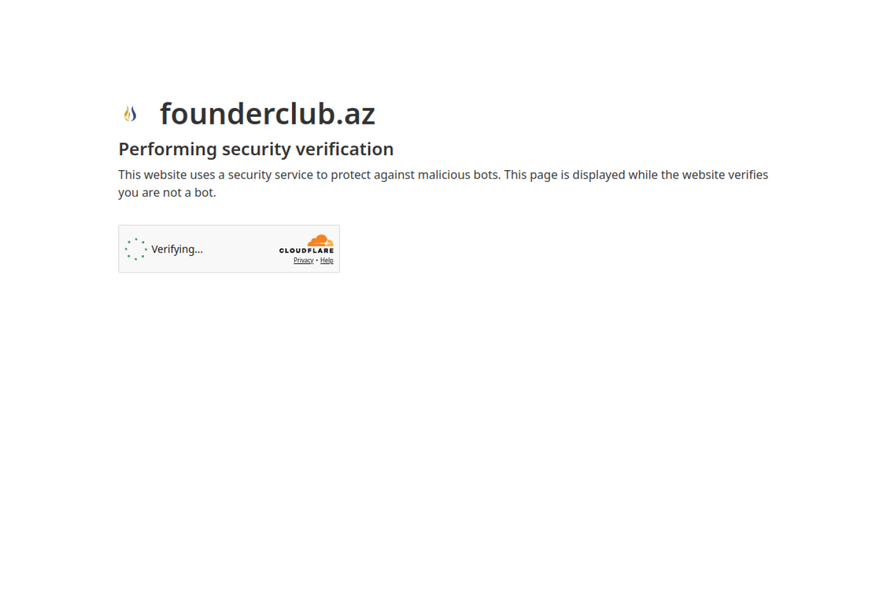
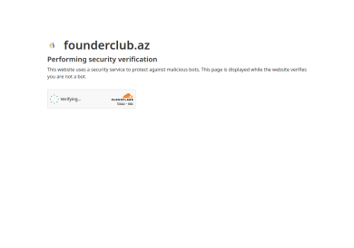

Poland — working internationally
Your business hasmoved forward.Your website should too.
I turn outdated and unclear business websites into credible digital platforms—combining strategy, design and development in one direct process.
- 01Independent studio
- 02Strategy, design & development
- 03Based in Poland
- 04English, Turkish & Azerbaijani
FounderClub
A community platform bringing founders, events, news and membership into one coherent digital experience.
Distinct entry points for news, events and membership.


Figure 01 — FounderClub home. News, events and membership are given distinct entry points without splitting the community story.
Explore the FounderClub projectA capable business should not look uncertain online.
When a website feels outdated, unclear or difficult to use, it changes how the business behind it is perceived. The problem is not decoration. It is lost clarity, trust and usefulness.
The business appears behind where it actually is.
Visitors struggle to understand what to choose.
Credibility drops on the device used most often.
International customers receive an inconsistent story.
The website stops reflecting how the business evolves.
The answer is not more decoration.
It is a clearer system.
Growth Website
A custom website for a growing business that needs clearer positioning, stronger credibility and a useful content system after launch.
Clarify
- Needs analysis
- Basic digital strategy
- Site architecture
Design
- Bespoke UI/UX
- Responsive system
- Multilingual structure
Build & launch
- Responsive development
- CMS where required
- Technical SEO and analytics
- Publishing and short support
This is a starting investment, not a fixed package price. Final scope, timing and pricing are confirmed after an initial project review.
Different scopes for businesses that need a focused presence—or a system beyond a standard website.
Business Website
A focused, professional website for a business that needs clarity, trust and a stronger first impression.
From 4,500 PLNCustom Digital Product
Portals, dashboards and tailored systems for needs that go beyond a standard business website.
Custom quoteThese are starting investment levels, not fixed package prices. Final scope, timing and pricing are confirmed after an initial project review.
One direct process, from the first question to launch.
Strategy, design and development stay connected, with clear decisions and visible checkpoints throughout the project.
- One direct point of contact
- Strategy before screens
- Design and development together
- Useful after launch
- 01
Define
We identify what the business needs to communicate, where the current experience falls short and what the new website must accomplish.
Checkpoint — Agreed goals, scope and success criteria. - 02
Structure
The content hierarchy, page architecture and key user paths are shaped before visual decisions begin.
Checkpoint — Approved sitemap, content hierarchy and key flows. - 03
Design & Build
Interface and implementation move together, keeping responsive behaviour, feasibility and quality aligned throughout the work.
Checkpoint — Reviewed responsive interface and working implementation. - 04
Launch & Improve
The finished website is tested, published and handed over with the foundations needed to measure and maintain it.
Checkpoint — Tested release, analytics baseline and support handoff.
DamirovPortrait to be commissioned
The person who shapes the work is the person you work with.
I’m Ismayil Damirov, an independent designer and developer based in Poland. I combine product thinking, interface design and frontend development to help growing businesses present themselves with greater clarity and credibility.
- Based in
- Poland, working internationally
- Languages
- English, Turkish, Azerbaijani
- Model
- Independent studio, direct collaboration
AI tools support parts of exploration and production. Strategy, design decisions and final quality control remain my responsibility.
Before we start.
A focused business website usually takes four to six weeks. Larger multilingual or content-led projects are scheduled after the initial review.
A clear decision-maker, access to existing brand and website materials, honest business context and timely feedback.
Yes. Existing content and analytics are reviewed first, then the parts worth keeping are separated from what is holding the website back.
Language structure is planned from the beginning so navigation, hierarchy and content remain consistent.
Starting prices indicate the minimum investment. Final deliverables, timing and price are confirmed after the first project review.
Every project includes a short post-launch support period. Ongoing care is available from 400 PLN per month.
If your business has moved forward
but your website has not, let’s fix that.
Share what is changing in your business and what the website needs to do next.
Website projects start from 4,500 PLN. Final scope and investment are confirmed after an initial project review.